02 · Memory：让 Claude 记住你的规矩¶
一句话： 把项目规则写进 CLAUDE.md，Claude 每次进入项目都会自动读取，不用你每次重新交代“用 pnpm”“先跑测试”“别动 legacy 目录”。

什么时候该配¶
- 你发现自己第三次向 Claude 解释同一条规则；
- 团队有固定约定：命名规范、测试要求、Git 流程；
- 项目目录复杂，希望 Claude 一进来就知道哪个目录是干什么的。
四层记忆，各管一摊¶
| 层级 | 文件位置 | 放什么 | 是否提交 Git |
|---|---|---|---|
| 组织策略 | 由管理员统一下发 | 公司级安全与合规要求 | — |
| 个人偏好 | ~/.claude/CLAUDE.md |
你在所有项目中的习惯，如“回复用中文” | 否 |
| 项目规则 | ./CLAUDE.md 或 ./.claude/CLAUDE.md |
技术栈、目录说明、测试与提交规范 | 是，团队共享 |
| 本地私有 | ./CLAUDE.local.md |
只对你自己生效的项目偏好 | 否，记得加进 .gitignore |
Important
这几层是拼接在一起的，不是后面覆盖前面。子目录里的 CLAUDE.md 会在 Claude 读取该目录时额外补充，适合 monorepo 中给不同子项目写不同规则。
四种写入方式¶
一份好的 CLAUDE.md 长什么样¶
# 项目记忆
## 项目概览
- TypeScript + Next.js 的 Web 应用，包管理使用 pnpm。
## 必须遵守
- 提交前运行 `pnpm test`，全部通过才能提交。
- 优先使用 async/await，不写 promise 链。
- API 变更必须同步更新 `docs/api.md`。
## 重要路径
- `src/app/` 页面与路由
- `src/server/` 服务端逻辑
- `legacy/` 旧代码，除非明确要求，否则不要修改
## 更多背景
- 架构说明见 @docs/architecture.md
写什么最有价值： 最容易被忽略的规则、提交前必须做的事、默认使用的工具、不能碰的文件、验收的最低标准。
不该写什么： 泛泛的项目介绍、经常变化的数据、多步骤的操作流程（这类应该做成 Skill）。
Tip
单个 CLAUDE.md 建议控制在 200 行以内。文件越长，Claude 对每条规则的遵循度越低。
用 @ 引用其他文档¶
- 相对路径以写这行的文件为基准；
- 可以层层引用，最多 4 层；
- 引用只是拆分文件，内容仍会全部加载。真正想“按需加载”，用 Skill。
Note
Claude Code 不会自动读取 AGENTS.md。如果项目里已有它，在 CLAUDE.md 中写一行 @AGENTS.md 即可复用。
Auto Memory：Claude 自己的笔记本¶
除了你写的 CLAUDE.md，Claude 还会在长期使用中自己记笔记，保存在 ~/.claude/projects/<项目>/memory/。
| CLAUDE.md | Auto Memory | |
|---|---|---|
| 谁来写 | 你 | Claude 自己 |
| 适合放 | 明确的规则 | 使用中沉淀下来的项目知识 |
| 启动时加载 | 全部 | 只加载索引的前 200 行（或前 25KB），其余按需读取 |
Auto Memory 默认开启，可以在 /memory 中关闭，或在 settings 中设置 "autoMemoryEnabled": false。两者搭配使用效果最好。
进阶：设置文件的优先级
与记忆不同，settings.json 是覆盖关系，优先级从高到低：
- 组织托管设置（managed settings）
- 命令行参数
.claude/settings.local.json（本地，不提交）.claude/settings.json（项目，提交）~/.claude/settings.json（个人）
在 /config 中做的修改会写入第 5 层，并在之后的会话中继续生效。
进阶：monorepo 中加载其他目录的记忆
额外目录中的 CLAUDE.md 会和当前项目的记忆一起加载。
常见坑¶
| 现象 | 原因与解决 |
|---|---|
| 写了规则，Claude 时灵时不灵 | 文件太长或规则太泛。精简到最关键的几条，写得具体可执行 |
| 团队成员看到了我的个人偏好 | 个人偏好放 ~/.claude/CLAUDE.md 或 CLAUDE.local.md，不要写进项目 CLAUDE.md |
| Claude 按旧规则办事 | 目录或规范变了，CLAUDE.md 没跟着改，记得同步更新 |
网上教程说用 # 开头快速记忆 |
旧写法已停用，改用 /memory 或直接说“记住……” |
下一步¶
留言板
全站所有页面共用这一个留言板，欢迎在这里提问、分享经验、指出错误。登录 GitHub 即可留言，请勿贴出公网 IP、订阅链接或证件信息。